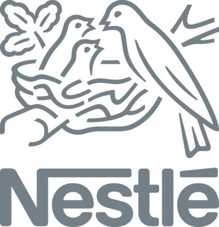

홈 > 브랜드 매거진 > 모엣&샹동
모엣&샹동
모엣&샹동는 프랑스의 식음료 브랜드로, 맛, 메뉴 구성, 패키지, 매장 또는 유통 채널이 함께 브랜드 경험을 만드는 영역입니다.
산업 분야 식음료 · 공개 등급 자료 기반 · 브랜드 평가 4.3 ★

한눈에 보는 브랜드
모엣&샹동는 프랑스 기반의 식음료 브랜드입니다. 맛, 메뉴 구성, 패키지, 매장 또는 유통 채널이 함께 브랜드 경험을 만드는 영역으로 분류되며, 브랜드명과 업종, 운영 국가, 공개 로고 여부를 함께 보며 사전 항목의 기본 맥락을 확인할 수 있습니다.
브랜드 관점
모엣&샹동 항목은 단순한 이름 목록이 아니라 식음료 시장 안에서 어떤 역할을 하는지 읽기 위한 기준점입니다. 제품·서비스 범위, 유통 방식, 시각 아이덴티티, 시장 포지션을 함께 비교하면 같은 산업의 다른 브랜드와 차이가 선명해집니다.
시작과 성장
1743년, 와인 거래상이었던 클로드 모엣은 메종 모엣을 설립하여 샴페인 지역의 발포성 와인을 유럽 왕실의 사랑을 받는 샴페인으로 성장시켰다. 모엣&샹동은 270여 년간 창의성과 개척정신을 발판으로 성취와 승리를 축하하는 샴페인 브랜드로 자리잡았다.
브랜드 아이덴티티
모엣&샹동은 메종 모엣이 탄생한 루이 15세 시대부터 왕실의 연회, 결혼식, 할리우드의 영화제, 레이싱 경주, 프라이빗 파티까지 승리와 업적에 경의를 표하는 모든 순간에 함께해왔다. 패셔너블하고 화려한 스타일로 성공의 순간을 축하하는 샴페인 대표 브랜드로 자리잡았다.
제품과 서비스
Moët Impérial, Br МОЁ HANDON MOET & CHANDON CHAMPAGNE IMPERIAL BR, Moët & Chandon Brut Impérial, Moët & Chandon Impérial Champagne Brut, Bar Champagner
현재 상태
타임라인
BI/CI 변천사
함께 읽을 브랜드

식음료 · 편집 검수네슬레네슬레는 스위스의 식음료 브랜드로, 맛, 메뉴 구성, 패키지, 매장 또는 유통 채널이 함께 브랜드 경험을 만드는 영역입니다.
 식음료 · 편집 검수버거킹
식음료 · 편집 검수버거킹버거킹는 미국의 식음료 브랜드로, 맛, 메뉴 구성, 패키지, 매장 또는 유통 채널이 함께 브랜드 경험을 만드는 영역입니다.
 식음료 · 편집 검수버드와이저
식음료 · 편집 검수버드와이저버드와이저는 식음료 브랜드로, 맛, 메뉴 구성, 패키지, 매장 또는 유통 채널이 함께 브랜드 경험을 만드는 영역입니다.
 식음료 · 편집 검수켈로그
식음료 · 편집 검수켈로그켈로그는 미국의 식음료 브랜드로, 맛, 메뉴 구성, 패키지, 매장 또는 유통 채널이 함께 브랜드 경험을 만드는 영역입니다.
 식음료 · 편집 검수KFC
식음료 · 편집 검수KFCKFC는 미국의 식음료 브랜드로, 맛, 메뉴 구성, 패키지, 매장 또는 유통 채널이 함께 브랜드 경험을 만드는 영역입니다.
 식음료 · 자료 기반돔 페리뇽
식음료 · 자료 기반돔 페리뇽돔 페리뇽는 프랑스의 식음료 브랜드로, 맛, 메뉴 구성, 패키지, 매장 또는 유통 채널이 함께 브랜드 경험을 만드는 영역입니다.
식음료 · 자료 기반클럽메드클럽메드는 프랑스의 식음료 브랜드로, 맛, 메뉴 구성, 패키지, 매장 또는 유통 채널이 함께 브랜드 경험을 만드는 영역입니다.
식음료 · 자료 기반5àsec5àsec는 프랑스의 식음료 브랜드로, 맛, 메뉴 구성, 패키지, 매장 또는 유통 채널이 함께 브랜드 경험을 만드는 영역입니다.